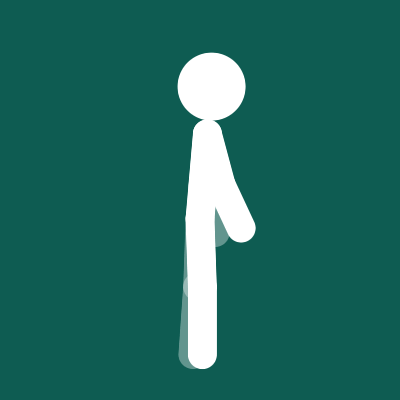
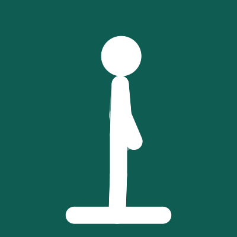
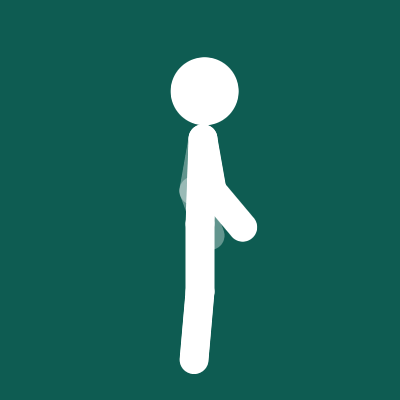

The Movement Philosophy
RepSnack movements are intentionally restricted to upright, zero-sweat, equipment-free archetypes designed to activate muscular blood flow and reverse seated postural stagnation within 40 seconds. Each exercise pairs with Apple CoreMotion algorithms (AirPods head displacement, Watch kinematics, or iPhone pocket inertia) to register completed reps without requiring cameras.

1. Air Squats
Target: Quadriceps, Gluteus Maximus, Hamstrings, Core Stabilizers
Why It Works for Desk Workers
As demonstrated in the Gao et al. (2024) study, squats engage the largest volume of skeletal muscle in the human body. Performing 10 squats every hour repeatedly triggers non-insulin GLUT4 translocation, blunting postprandial glucose excursions by ~21%.
Desk Form Cues
- Stance: Feet shoulder-width apart, toes flared outward at 15–20°.
- Torso: Keep chest upright and eyes forward (away from computer monitors). Arms extend forward horizontally for counterbalance.
- Depth: Lower hips back and down until thighs reach parallel with the floor (90° knee flexion). Avoid bouncing at the bottom.
- Ascent: Drive through whole feet, squeezing glutes at the lockout.
Sensor Detection Kinematics
AirPods Pro (CMHeadphoneMotionManager): Detects vertical translational acceleration along the cranial $Y$-axis. A valid rep requires a downward displacement exceeding 35 cm followed by a clean upward deceleration waveform lasting between 1.2 and 2.5 seconds.
Pocketed iPhone (CMMotionManager): Measures pitch changes in the anterior femur. As thighs reach horizontal, pelvic inclination exceeds 65°, completing one verified rep cycle.

2. Soleus Calf Raises
Target: Soleus, Gastrocnemius, Achilles Tendon Elasticity
Why It Works for Desk Workers
The soleus muscle possesses unique oxidative characteristics. Despite making up only 1% of total body mass, active soleus contractions can double local oxidative metabolism without depleting stored glycogen. Calf raises can be performed 100% silently while on microphone or during standup meetings.
Desk Form Cues
- Position: Stand behind your chair or desk with fingertips lightly touching the edge for balance only.
- Elevation: Press down through the balls of your big toes, raising heels as high as possible.
- Hold: Pause for 1 second at full peak contraction to maximize vascular pumping.
- Descent: Lower slowly over 2 seconds until heels lightly kiss the floor.
Sensor Detection Kinematics
Apple Watch (CMMotionManager): When your hand rests lightly on your desk or hip, the watch accelerometer identifies the subtle 8–12 cm vertical lift and distinct deceleration inflection point of the plantarflexion stroke.
3. Desk Incline Push-Ups
Target: Pectoralis Major, Anterior Deltoids, Triceps Brachii, Serratus Anterior
Why It Works for Desk Workers
Typing and mouse usage lock your shoulder girdles in protracted, internally rotated positions. Incline push-ups engage the serratus anterior and chest while maintaining core plank stability, reversing rounded desk posture without touching dirty floor carpets.
Desk Form Cues
- Surface: Place hands slightly wider than shoulder-width on a solid, unmoving desk edge or kitchen counter.
- Plank: Step feet back until body forms a straight 45° diagonal line from crown to heels. Squeeze core and glutes to prevent lumbar sagging.
- Descent: Lower chest to touch the desk rim, keeping elbows tucked at 45° relative to your torso (avoid flaring elbows 90°).
- Push: Press forcefully through palms back to full lockout, spreading shoulder blades apart at the top.
Sensor Detection Kinematics
Apple Watch & Pocketed iPhone: Wrist orientation remains locked in dorsiflexion while the watch accelerometer detects the horizontal-diagonal displacement vector. The iPhone’s accelerometer registers cyclical pelvic translation along the diagonal plane.

4. Standing Marches
Target: Psoas Major, Iliacus, Rectus Abdominis, Gluteus Medius
Why It Works for Desk Workers
Prolonged 90° seated posture locks the psoas and iliacus in a shortened, hypertonic state, causing anterior pelvic tilt and lower back aches. High-knee standing marches dynamically stretch the stance-leg hip while firing the contralateral hip flexor through its full physiological range of motion.
Desk Form Cues
- Stance: Stand tall with core braced and arms naturally bent at 90°.
- Knee Drive: Drive one knee upward until thigh is parallel to the ground (90° hip flexion). Flex the ankle (dorsiflexion).
- Stance Leg: Press into the floor with the opposite foot, standing tall without leaning backward.
- Rhythm: March with controlled tempo—approximately 1 rep every 2 seconds.
Sensor Detection Kinematics
AirPods Pro (CMHeadphoneMotionManager): As each knee drives up, subtle cranial vertical bobbing creates an alternating harmonic frequency. The RepSnack motion model matches this rhythmic cadence against known march wavelets to record reps in alternating pairs.
Build Your 10-Rep Hourly Habit
Verified by Apple Watch and AirPods. Zero cameras. 100% on-device privacy.